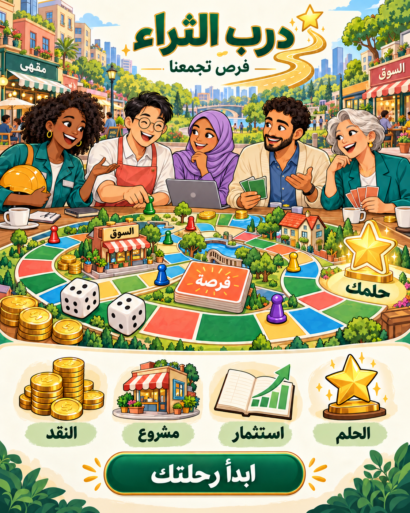
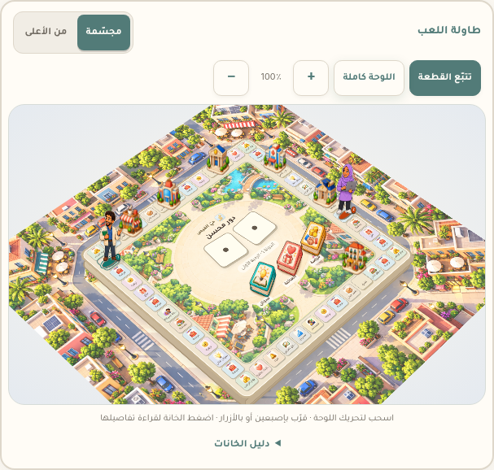
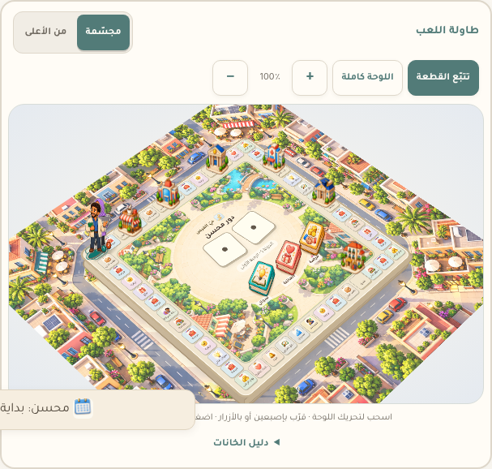

درب الثراء
هوية لعبة المال والحياة
فرص تجمعنا. وأحلام نحققها.
لعبة مالية باللغة العربية تجمع شخصيات من ثقافات وأعمار مختلفة. الدرب الذهبي يقود إلى نجمة الحلم، والرسوم الكرتونية الواضحة توحّد الشخصيات والأيقونات واللوحة. تضم المجموعة نساء محجّبات وغير محجّبات، في أدوار مهنية معاصرة.
العينة المعتمدة


٠١ · الشعار
اترك مساحة آمنة حول الشعار لا تقل عن ربع عرض الرمز. الحد الأدنى للرمز ٢٤ بكسل، وللتوقيع الأفقي ٢٢٠ بكسل. استخدم رمزاً منفرداً للأحجام الصغيرة. لا تمدّد الشعار ولا تغيّر ترتيب عناصره.


٠٢ · الألوان
#527B78#F1C36D#FAF7F1#463F39#EDB8A4#426F63الساج الهادئ للأزرار الأساسية والهوية، والعاجي لمساحات القراءة، والذهبي للتقدّم والإنجاز، والمرجاني والأزرق والبنفسجي لتنويع عالم اللعبة. استخدم #8B682D للنص الذهبي على العاجي؛ الذهبي الفاتح عنصر زخرفي. استخدم الأخضر والأحمر مع كلمات أو رموز توضح المعنى، ولا تعتمد على اللون وحده.
٠٣ · الخط والصوت
حلمك كبير. ابدأ دربك.
تاجر، استثمر، وابنِ حياة على مقاس أحلامك.
١٢٣٤٥٦٧٨٩٠ · 1234567890خط Tajawal بوزنين ٤٠٠ و٧٠٠، محفوظ محلياً للعمل دون اتصال. العنوان ٤٠–٦٤ بكسل، عنوان القسم ٢٤–٣٢، والنص ١٦–١٨. اكتب بلغة عربية مباشرة ودافئة، وابدأ الأزرار بالفعل: ابدأ، اشترِ، استثمر، انضمّ.
ترخيص الخط المفتوح SIL OFL٠٤ · الشخصيات
١٤ شخصية للمهن داخل اللعبة، مع شخصيتين إضافيتين. رسم كرتوني ثنائي الأبعاد، وحدود داكنة وتظليل بسيط. تتنوّع الملامح والأعمار والخلفيات الثقافية؛ الممرّضة وصاحبة المطعم والمبرمجة والصيدلانية محجّبات، إلى جانب مهندسة وصاحبة بقالة غير محجّبتين. تُظهر أدوات العمل المهنة دون الاعتماد على صور نمطية ثقافية.


٠٥ · بضائع السوق


حواف واضحة وتفاصيل دافئة تساعد على التعرّف على البضائع حتى داخل خلايا السوق الصغيرة. تبقى أسماء البضائع ظاهرة بجانب الرسوم.
تحميل لوحة البضائع الأصلية٠٦ · عالم اللعبة
٠٧ · أيقونات الواجهة الكرتونية
dicepersonpeopleshopledgerglobearrowcoincaseleafreceiptheartstarhomeshieldbookgiftchartbankpackagebulbbellcoffeebuildingplanehealthscalesmileflagdownloadmenurobot٥٢ رسماً توضيحياً بعمق وتظليل ناعم: ٣٦ رمزاً أساسياً و١٦ رسماً للتعبيرات والصوت والبضائع. تشمل صور اللاعبين والتفاعلات نفس الأسلوب. تُعرض اتجاهات السوق والحالات بعلامات واضحة حتى لا تضيع دلالتها.
تحميل الأيقونات المرسومة · تحميل التعبيرات والبضائع٠٨ · لوحة الطاولة وقطع الشخصيات
سطح بمنظور وعمق ثلاثي الأبعاد، وخانات مرتفعة، ورزم بطاقات فوق حيّ كرتوني. القطع شخصيات كاملة الجسم تطابق المهنة التي اختارها اللاعب، تتحرّك خانةً خانةً على المسار. قاعدة كل قطعة تحمل لون اللاعب ورقمه لتمييز الشخصيات المتشابهة. يمكن التبديل إلى العرض من الأعلى، أو سحب المشهد والتكبير بإصبعين أو بالفأرة أو بالأزرار. يتتبّع العرض القطعة أثناء الحركة؛ يوقف السحب اليدوي التتبّع إلى أن تعيده بالزر. اضغط الخانات أو رزم البطاقات لقراءة التفاصيل في نافذة واضحة، مع دعم تقليل الحركة.



٠٩ · مواد المشاركة


المواد جاهزة للاستخدام مع رابط اللعبة عند النشر. لا تتضمن وعداً بعائد استثماري أو أرباح حقيقية.
١٠ · بطاقات القرار الجديدة
تسع عائلات من الرسوم تغطي بطاقات الاستثمار والعائلة والمعرفة والسوق والأحلام والمصاريف والحماية والشراكة والتعلّم. نعرض العنوان، ثم تفاصيل القرار وقيمه، ثم الخيارات بترتيبها. تبقى جميع الأرقام والقواعد كما هي، مع نص عربي أوضح وألوان هادئة وظلال قصيرة.


١١ · إضافات الهوية الخفيفة
خمسة عشر رمزاً إضافياً وأربع بطاقات قرار، مع مبانٍ ورزم مرسومة مسبقاً بخلفية شفافة. تبقى الرسوم على أسلوب الهوية الأصلي، ويظهر المالك ومستوى التطوير فوق المبنى، وتفتح البيانات الحالية عند الضغط.
